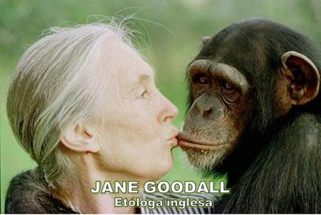

Cada 24 de noviembre celebramos en todo el planeta el «Día Mundial de la Evolución», y desde 2010 se celebra también en España y América Latina el «Día del Orgullo Primate». Porque esta fecha conmemora dos acontecimientos clave que, separados por 115 años, nos ayudaron a comprender quiénes somos, de dónde venimos, y por qué no necesitamos recurrir a relatos mágicos o sobrenaturales para explicarnos la vida.


Se entiende como evolución biológica el conjunto de cambios en caracteres fenotípicos y genéticos, que experimentan las poblaciones biológicas a través de las generaciones. Y hoy celebramos el Día Mundial de la Evolución, por un primer evento que ocurrió el 24 de noviembre de 1859, cuando Charles Darwin (1809–1882) publicó «El origen de las especies». En su monumental obra, Darwin demostró que la enorme diversidad de la vida en la Tierra proviene de un proceso natural de evolución por selección natural, no de un acto mágico ni de la «creación» por parte de un ser todopoderoso que se entretuvo moldeando barro a su imagen y semejanza.
Aquel libro sentó las bases de la biología moderna, y dio un golpe mortal al mito del creacionismo, aunque algunos todavía insistan en negarlo y sigan creyendo que un «Dios» celoso y malhumorado sopló vida en la nariz de un muñeco de lodo hace unos pocos miles de años (Génesis 2:7).
Por otra parte, la biología identifica como primates al orden de mamíferos placentarios al que pertenecemos los humanos y nuestros parientes biológicos más cercanos, quienes pudimos evolucionar más libremente tras la extinción de los dinosaurios —entre 66 y 65 millones de años atrás—, evento que permitió la expansión de los mamíferos durante la era cenozoica. Por cierto, dejemos claro que los humanos nunca convivimos con los dinosaurios, pese a lo que algunos dibujos animados y ciertos fundamentalistas bíblicos quieran hacernos creer.
Y celebramos hoy el Día del Orgullo Primate por un segundo evento: el descubrimiento de «Lucy», el 24 de noviembre de 1974. Tres paleoantropólogos —uno estadounidense, Donald Johanson (n. en 1943), y dos franceses, Yves Coppens (1934-2022) y Maurice Taieb (1935-2021)— hallaron en la región de Afar, Etiopía, África Oriental, los restos de una hembra de Australopithecus afarensis de unos 3,2 millones de años. Medía entre 1,10 y 1,30 metros, y caminaba erguida sobre sus dos piernas, aunque conservaba brazos largos y un cráneo pequeño. En honor a la canción «Lucy in the Sky with Diamonds» de los Beatles —que sonaba durante las excavaciones— la bautizaron «Lucy».
El Australopithecus afarensis es un primate homínido primitivo que, aunque conservaba todavía características de simio, es considerado antepasado directo muy cercano de los humanos modernos. Por eso durante años Lucy fue considerada «la abuela de la humanidad», hasta que en 1992 se descubrió también en Etiopía a «Ardi» (Ardipithecus ramidus), aún más antiguo: 4,4 millones de años.
Estos hallazgos confirmaron lo que Darwin había intuido sin fósiles humanos que lo probaran: nuestra especie no fue creada, sino que evolucionó. Somos el resultado de miles de millones de años de cambios, mutaciones y adaptaciones, no de un «soplo divino».
Y la genética moderna ha dado la razón a Darwin una y otra vez. Estudios comparativos del ADN revelan que compartimos el 40% de nuestros genes con las gallinas y los gusanos, cerca del 80% con los ratones, el 96,4% con los orangutanes, y un asombroso 99% con los chimpancés, nuestros parientes vivos más cercanos. De modo que si el Génesis dice que fuimos hechos «a imagen y semejanza» de «Dios» (Génesis 1:26), entonces este dios debería ser también muy semejante al chimpancé.
Nuestras semejanzas con el chimpancé fueron ampliamente estudiadas por la recién fallecida etóloga británica Jane Goodall (1934-2025). Justamente en 2025 se cumplieron 65 años de la llegada de Goodall al Parque Nacional Gombe Stream, en Tanzania (también en África Oriental), el 14 de julio de 1960, donde por décadas se dedicó a observar el comportamiento de los chimpancés salvajes.
Goodall rompió los moldes científicos de su tiempo, al darles a los chimpancés nombres en lugar de números, reconociendo en ellos personalidades, emociones y vínculos afectivos. Los vio abrazarse, besarse, darse palmadas en la espalda, reconciliarse después de conflictos, e incluso usar herramientas. Descubrió en ellos indicios de pensamiento racional y de emociones que solemos considerar «humanas», así como también actitudes que creíamos exclusivas de la humanidad.
Su trabajo no sólo revolucionó la primatología, sino que también derribó la arrogante frontera entre «ellos» y «nosotros»: porque la humanidad no empieza en la especie Homo sapiens, sino que es un proceso compartido. Goodall falleció el 1 de octubre de 2025 a los 91 años, en Los Ángeles, Estados Unidos.
Por todo esto el Día del Orgullo Primate nació con un mensaje claro: nosotros no somos seres superiores, sino parte de la naturaleza. Así que este día nos invita a reconocer nuestro parentesco con los demás animales, y abandonar la absurda idea de que somos la cúspide del universo y obra maestra de un supuesto creador, quien nos formó a su imagen perfecta y nos puso en el planeta para dominar a los demás seres vivos (Génesis 1:27-30, Salmo 8:3-6).
La organización ambientalista y animalista española AnimaNaturalis, lo expresó con acierto: «Queremos declarar que los seres humanos no estamos separados de la naturaleza, sino que somos parte de ella por nuestro origen evolutivo. Manifestamos que nos sentimos orgullosos de ser homínidos y de que nuestros parientes más cercanos sean los simios africanos. Tal hecho no nos hace menos humanos.»
En efecto, aceptar nuestra condición de primates no nos rebaja, porque nos da el crédito de reconocer la evidencia y honrar la verdad. La ciencia nos enseña que somos producto de la vida misma, no de la superstición.
Así que en esta fecha brindemos por esos dos grandes eventos: la publicación de «El origen de las especies» el 24 de noviembre de 1859, y el descubrimiento de «Lucy» el 24 de noviembre de 1974. Celebremos así la genialidad humana que comprendió el proceso de la evolución, recordando con orgullo que compartimos ADN, emociones y destino con todos los seres vivos.
¡Felicidades, hermanos primates! ¡Feliz día de la evolución!
[Godless Freeman]
Comentarios
Comments powered by Disqus